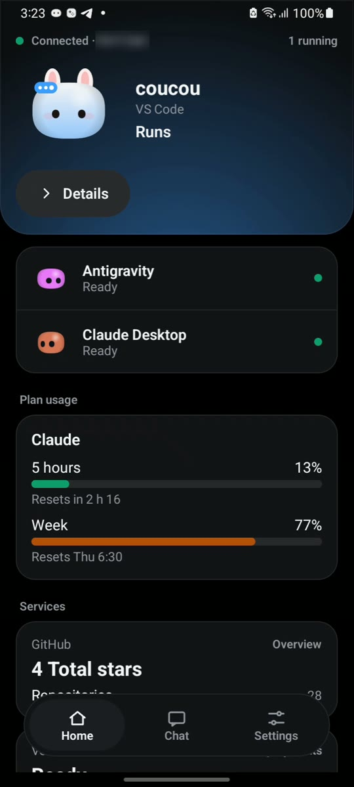
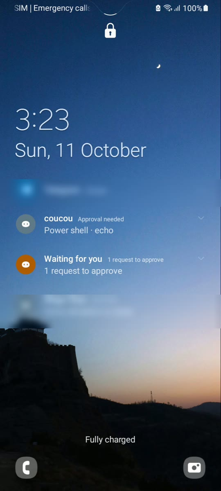
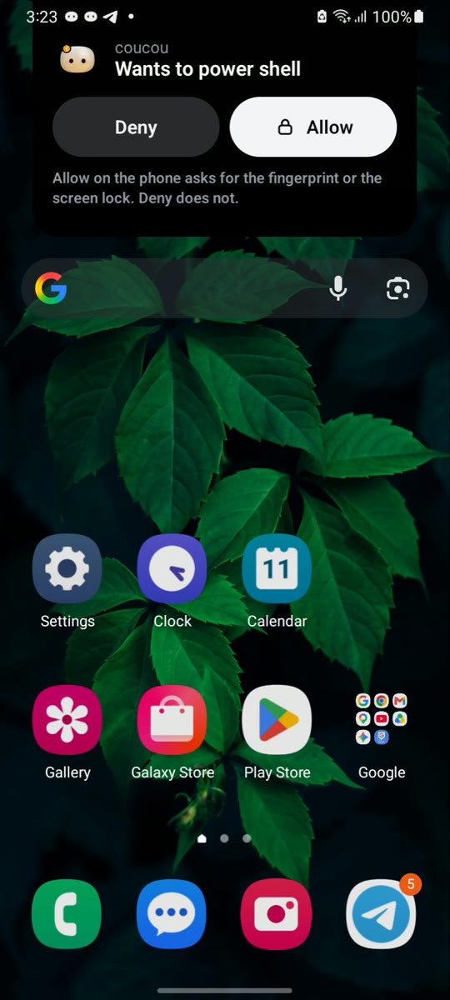

Coucou for Android
Download Coucou for Android 0.2.0



What you need
- Computer: Coucou 0.4.0 or later on Windows or Linux (Windows, Linux). The Mac isn’t supported yet.
- Phone: Android 11 or later.
- Wi-Fi: the phone and the computer on the same network. No account to create.
Get it on your phone
- Download
Coucou-Android-0.2.0.apkfrom the release page on your phone and open it. Android asks once to allow installs from your browser or file manager. - On your computer: close any older Coucou, start 0.4.0 or later, then Settings → Android phone → turn on Phone link. If Windows asks about the firewall, allow Coucou on private networks.
- Show pairing code, then scan it with the app (or paste the link).
- Start a Claude Code session on the computer: it shows up on the phone within seconds.
What you can do
- Allow or Deny a permission from the notification or the app, even on a locked phone. A request wakes the screen; notifications show at most the tool and the program’s name, never the full command. Allow asks for your fingerprint or screen lock.
- Answer Claude Code’s questions and chat through your computer’s own AI keys, when you turn them on in the computer’s settings.
- See your agents at a glance: who is working, plan usage and your services.
- Widgets for your home screen: Solo, List, Mochi Big, Status Pill, Waiting Alert, Usage Ring, Today, Mochi Mood and the Agents summary. They show your agents’ names and how they are doing, never a command or a file, and a request is always decided in the app.
- An island over other apps (optional), a quick-settings tile, and a notification that keeps the link alive.
- Mochi, his outfits and his sounds, on your phone.
Private by design
- The phone talks straight to your computer on your Wi-Fi: TLS with a certificate pinned from the pairing code. The phone link is off by default and nothing listens until you turn it on.
- A command too long to show in full can only be allowed on the computer. Each request expires after two minutes.
- The pairing, chat and approval screens can’t be captured or recorded. No ads, no analytics, no tracking.
Credits
Coucou for Android is by Rhytam Biswas, part of Coucou by Louis Raillé. The name, Mochi, the icon and the sounds are © Louis Raillé; the Android code is © Rhytam Biswas under the MIT License. Guide and troubleshooting: android/README.md. Read the privacy policy.